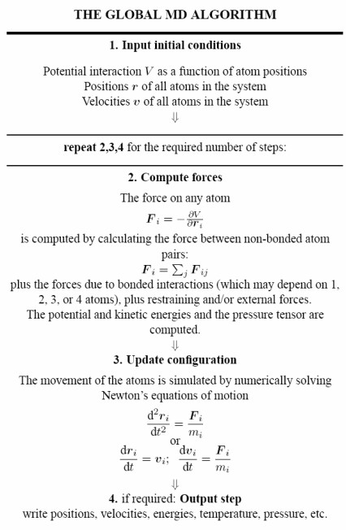
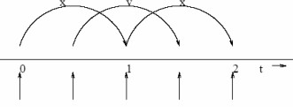
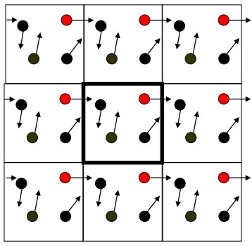
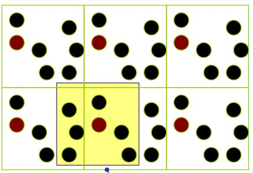
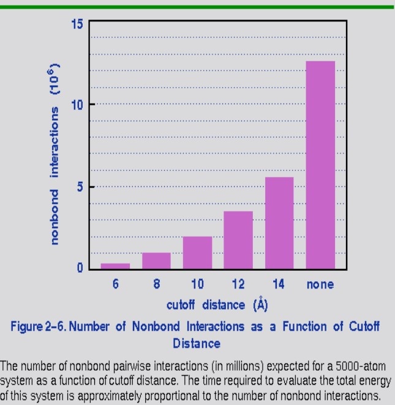

6 Molecular Dynamic Simulations
Minimization only aids in finding the local minimum of a function. Therefore, the structural features of molecules will need to be studied with various other tools (i.e., software) to find the global minimum.
Given the complexity of the potential energy surface (i.e., PES) of a real system, an efficient method of sapmling all possible phase spaces is necessary.
6.1 A Brief Introduction to Molecular Dynamics
Moleuclar Dynamics (i.e., MD) is deterministic: the future state of a system is determined by its present state. The idea is to solve Newton’s equations of motion for a system of atoms that interact with each other via an energy function: a force field:
\[\begin{equation} -\frac{dV}{dx} \rightarrow F = ma \rightarrow m\frac{d^2x}{dt^2} \end{equation}\]
Where \(x\) represents the position of a molecule and \(V(x)\) the potential energy of a molecule.
MD is typically used to compute equilibrium properties and transport properties (e.g., diffusion coefficients). MD is particularly well-suited to model macromolecular systems because of its generality.
6.1.1 Historical Origins
MD was introduced by Alder and Wainwright in the late 1950’s to study hard sphere interactions. Many important insights regarding simple liquid behaviors arose from their studies.
Rahman then carried out the first simulation using a realistic potential for liquid argon.
The first molecular dynamics simulation of a realistic system was done by Rahman and Stillinger during their liquid water simulation in 1974.
The first protein simulations were done in 1977 with the simulation of bovine pancreatic trypsin inhibitor (i.e., BPTI) by McCammon and Karplus.
The DNA double helix was done by Levitt in 1983. In today’s literature, one typically finds molecular dynamic simulations of protein-protein, protein-DNA, and lipid systems that address a variety of issues (including the thermodynamics of ligand binding and small protein folding).
Because of the above, there are many specialized systems for particular problems, including mixed quantum mechanical - classical simulations (that are employed to study enzymatic reactions).
Simulations are typically used for experimental procedures (e.g., X-ray crystallography and NMR structure determination).
6.2 How Molecular Dynamics Work
The derivatives of a macromolecular force field (e.g., OPLS) allows one to find the forces on each atom as a function of its position. A standard technique is to solve Newton’s methods numerically via some finite difference scheme.
In other terms, if the system is advanced by a small step \(\Delta t\), the forces and velocities can be re-calculated. Provided that \(\Delta t\) is sufficiently small, an approximation to the continuous equations of motion can be found.
6.2.1 Verlet Leapfrog Method

This is one of the most popular methods and widely used integrators. Here, the positions and the velocities of particles are successively “leap-frogged” over one another using a force field’s acceleration:
\[\begin{align} \vec{x}(t + \Delta t) &= \vec{x}(t) + \vec{\nu}\left(t + \frac{\Delta t}{2}\right)\Delta t \\ \vec{\nu}\left(t + \frac{\Delta t}{2}\right) &= \vec{\nu}\left(t - \frac{\Delta t}{2}\right) + \vec{a}(t)\Delta t \end{align}\]
This scheme has a higher precision (of order \(\Delta t^4\)) - this means that longer step times can be used for a given level of fluctuations.
This method also has low drift (provided that an appropriate time step and force cut-off is used).
6.3 Tricks of the Trade
There are a number of tricks that are centered around reducing the amount of effort in the calculation of atomic forces.
6.3.1 Periodic Boundary Conditions
Periodic Boundary Conditions (i.e., PBCs) eliminates surface effect-edge molecules. The size of the system would need to be large enough to ensure that the surface only has a small influence on bulk properties.
During a PBC, the simulation box is replicated throughout space to form an infinite lattice.

When a particle leaves its boundary box, its periodic image in the other boxes also moves in the same orientation.
As a particle leaves the outer boundaries, it re-enters through the opposite face; the system has no surface at the outer boundaries.
6.3.2 Distance Calculations

The minimum image convention considers the nearest image of a given particle when calculating distances.
The maximum distance between two atoms in one dimension is half a box length.
6.3.3 Non-Bonded Cutoffs

If a simulation system has \(N\) atoms, then the total number of interaction pairs is \(\displaystyle \frac{N(N - 1)}{2} \approx N^2\). To reduce computational efforts, a cutoff is usually employed (i.e., non-bonded interactions within a distance are considered).
This simplification is valid for short-range interactions (e.g., van der Waals interactions), but caution should be utilized when dealing with long-range electrostatic interactions.
6.4 Molecular Dynamics Simulation Parameters
6.4.1 Time Steps
Too short a time step and the phase space may be inefficiently sampled and too long a time step will cause the energy to fluctuate wildly (i.e., the simulation may “explode”).
The above instabilities are a consequence of atom motions being extrapolated into regions with exceedingly high potential energies.
When simulating atomic fluids, the time step should be comparable to the mean time between collisions (i.e., about 5 femtoseconds).
For flexible molecules, the time step should be an order of magnitude less than the period of fastest motion (i.e., for a C-H bond, it’s around 10 femtoseconds, so about 1 femtosecond is good).
6.4.2 Kinetic Energy and Temperature
The total kinetic energy for a system that has \(N\) particles is:
\[\begin{equation} E_{kin} = \frac{1}{2}\sum_{i = 1}^Nm_i\nu_i^2 \end{equation}\]
From the above equation, the absolute temperature \(T\) is:
\[\begin{equation} \frac{1}{2}N_{df}kT = E_{kin} \end{equation}\]
Where \(k\) is Boltzmann’s constant and \(N_{df}\) is the degrees of freedom which can be calculated using the formula \(\displaystyle N_{df} = 3N - N_{com}\)
In this scenario, three degrees of freedom must be removed from \(N_{com}\) as the three center of mass velocities are constants of motion (which are typically set to zeroes).
6.4.3 Pressure and Virial
The pressure \(P\) is the difference between kinetic energy \(E_{kin}\) and the virial \(\Xi\):
\[\begin{equation} P = \frac{2}{V}\left(E_{kin} - \Xi\right) \end{equation}\]
Where \(V\) is the volume of the computational box and \(P\) is the scalar pressure - \(P\) can also be used for isotropic systems, in which case, \(P\) is denoted by \(\displaystyle P = \frac{trace(P)}{3}\)
\[\begin{equation} \Xi = -\frac{1}{2}\sum_{i < j}\vec{r}_{ij} \bigotimes \vec{F}_{ij} \end{equation}\]
The above equation is that for the virial tensor.
6.4.4 Temperature Coupling
Temperature coupling is utilized when one needs to determine the behavior of the system with regards to temperature (e.g., unfolding a protein). During such a system, the pressure \(P\) must be kept constant.
The Berendson coupling equation states that:
\[\begin{align} \frac{dT}{dt} &= \frac{T_0 - T}{\tau_T} & \frac{dP}{dt} = \frac{P_0 - P}{\tau_P} \end{align}\]
Temperature coupling rescales velocity while pressure coupling rescales volume. When both the temperature and the pressure are controlled, the system is called isothermal-isobaric.